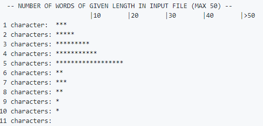

Categories
Categories
Experiment & Analysis
Tools
Simulation
Mathy Stuff
Demonstrations
Documentation and Howto
Opinion
Coursework and Exercises
Categories
Experiment & Analysis
Tools
Simulation
Mathy Stuff
Demonstrations
Documentation and Howto
Opinion
Coursework and Exercises
 Do
“ultradian” rhythms mediate my productivity throughout the day?
(Local, 2018.1)
Do
“ultradian” rhythms mediate my productivity throughout the day?
(Local, 2018.1)
An Rmarkdown notebook using a
small, self-collected dataset.
 Sound-pressure
level at a large datacenter (Local, 2018.2)
Sound-pressure
level at a large datacenter (Local, 2018.2)
Are sound
levels dangerously high? An Rmarkdown notebook
examining the question using self-collected readings.
“Continuous SPL levels in the main datacenter floor are too high for unprotected long-term exposure. The NIOSH limit for 94 dB is 1 hour, and even assuming a full 3 dB of inaccuracy in the measurment, at 91 dB, NIOSH still recommends no more than 2 hours of continuous unprotected exposure. It therefore seems reasonable to conclude that workers entering the main datacenter floor should wear ear protection if they expect to be on the floor for more than a few minutes, and might as well get in the habit of always having ear protection on hand when entering the main datacenter floor.”
 Piltdown (GitHub,
2021)
Piltdown (GitHub,
2021)Kallychore
(GitHub, 2018)
Kallychore is a plain-text code notebook processor
for mixing text and bash code, a little like Rmarkdown mixes Markdown
and R. Bash with embedded awk.
Rmarkdown is to an interpreted language as Kallychore is to a
compiled one. Kallychore makes a single pass over a plain-text (or
Markdown) document and interprets the embedded code blocks and outputs a
single file with text, code, and code output.
 Todostack.el
(GitHub, 2011)
Todostack.el
(GitHub, 2011)
A to-do list as a stack, written in Emacs
Lisp. Some description
on Blogspot. This is for people who have constant interruptions. When
something interrupts you, push a couple of words about what you are
doing onto the stack. Once you get back, pop the stack and see what you
were doing.
 Playing with
The Möbius Function in bash (Local, 2018.4)
Playing with
The Möbius Function in bash (Local, 2018.4)
 Number
Chunking with Chunky Numbers (LinkedIn, 2018.03)
Number
Chunking with Chunky Numbers (LinkedIn, 2018.03)
 Tally
Systems for Hand Collection of Data (LinkedIn, 2018.03.23)
Tally
Systems for Hand Collection of Data (LinkedIn, 2018.03.23) Cartouche
Links With CSS (Blogspot, originally on evanswinner.com,
2012)
Cartouche
Links With CSS (Blogspot, originally on evanswinner.com,
2012) Why
Your Systems People Need a Sandbox (LinkedIn, 2016.06.14)
Why
Your Systems People Need a Sandbox (LinkedIn, 2016.06.14) Exploring the BRFSS Data
(Local, 2016)
Exploring the BRFSS Data
(Local, 2016)Math and
Coding Exercises (GitHub, various dates)
Lots of little
exercises in APL, Python,
Fortran, C, Haskell,
Forth, and Lisp from Project Euler,
Rosetta Code, Project Lovelace, various books, etc.